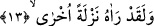
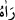
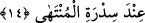

habîbi (a.s.) varlığının zerreleri bütünüyle bâtını zâhirine, zâhiri de bâtınına inkılap
edivermiştir.
Hakk’ın varlığından bir kısmının rü’yetinin hâsıl olmaması sûretiyle âşık-ı sâdık olan
Muhammed (a.s.)’a karşı bir hicab-ı rû’yet asla yoktur. Hakk (c.c.) kemâl-i rûyet ile
habîbine görünür. Zaten bu sebeple Rasûlullah (s.a.) Müslim’in sahihinde rivâyet
edilen: “Rabbimi hem gözümle ve hem de kalbimle gördüm” buyurmuştur.”[86]
Baklî’nin sözü burada bitti.
İbn Atâ der ki: “Kalp, gözün gördüğünün hilâfına inanmadı” takdîrinde âyete mânâ
vererek: “Rabb’i gören her bir kimsenin gönlü O’nu idrak husûsunda hareketsiz kalmaz.
Zira onu müşâhede etmek her zaman hâsıl olan bir husus olmadığı için Zâtının tecellîsi
sebebiyle bu sırrın kendisine verildiği kişinin kalbi depreşir. Maamafih Rasûl (s.a.) de
kalbinde, aklında, hissiyâtında yüklemiş olduğu bu müşâhede sırrı ile çalkalanmakta idi.
Bu husus da, Rasûlullah’da müşâhedesi bulunan rüyet-i ilâhiyyenin onda dürülüp
yüklenmiş olduğuna işâret etmektedir” demektedir.
“Onun gördüğünden kuşku mu duyuyorsunuz?” Mi‘râc gecesinde gördüğü şey
konusunda onunla mücâdele mi ediyorsunuz? Mücâdeleden maksad soru sordukları
Beytü’l-Makdis’in evsafı ve kendi kervanlarının durumuydu.
Bunun anlamı hakkında bazı âlimler: “Rasûlullah (s.a.) Allah’ı gördüğü halde onlar
bu konuda tartışıyor ve rü’yetullahı inkâr ediyorlar” demişlerdir.
et-Te’vilâtü’n-Necmiyye’de bu âyetin; Hakk’tan mahrûm kılınan kimselerin halkla
mücâdele ettiğine, hakîkî vahdet şühûdundan uzak bir biçimde, kesret makamında
bulunmalarından dolayı, haksız olarak insanların şühûduyla mücâdeleye tutuştuklarına
işâret ettiği belirtilmiştir. Allah bizi ve sizi mahrumiyet cehenneminin ateşinden ve o
ateşin alevi ile tutuşmaktan korusun?
13. Andolsun onu, önceden bir defa daha görmüştü.
“__WORD__ /Raâhü = onu gördü”deki bâriz zâmir Cibrîl (a.s.)’e âiddir. Bu âyetin mânâsı:
“Allah’a yemin olsun! Muhammed (s.a.) Cibrîl (a.s.)’i hakîkî sûretinde bir kere inişi
sırasında görmüştü” takdirindedir. Rasûlullah (a.s.) Cebrâîl’in inişini, farz namazların
adedini azaltmak için Allah’a yükseldiği an görmüştü. Bu nedenle Rasûlullah’ın her
urûcu Cibrîl için bir iniş demektir. İşte Rasûlullah bu inişlerinin birinde Cibrîl’i görmüş
idi.